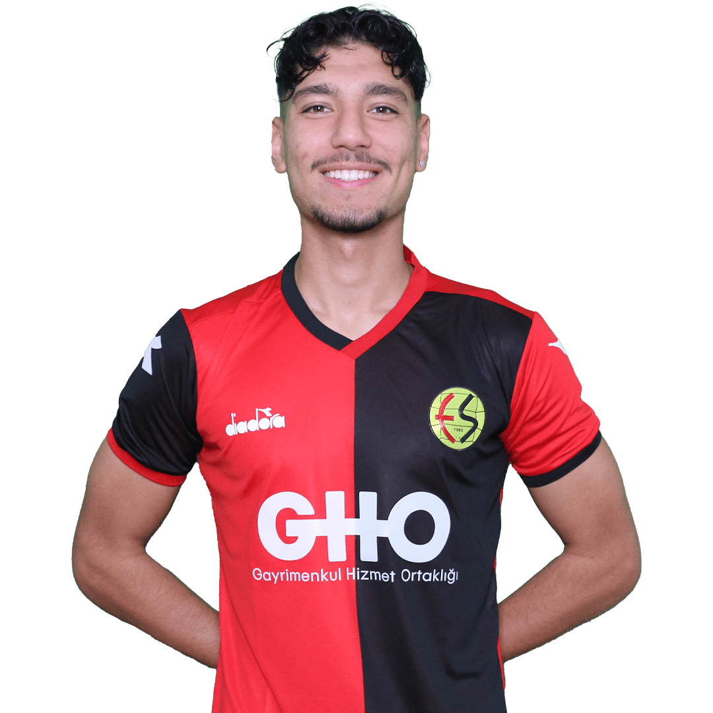
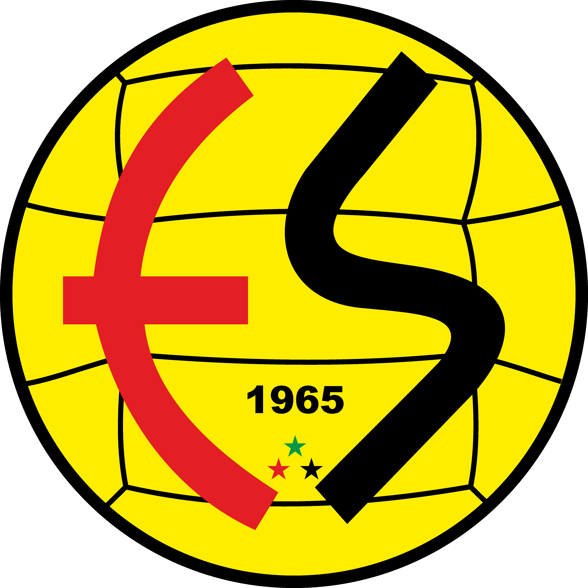

Eskişehirspor ya da halk arasındaki kısa adıyla Es-Es, 19 Haziran 1965 tarihinde Eskişehir'de
kurulmuş bir takımdır.
Hikayesi ile şöyledir;
1963 yılında Türkiye akademiler arası futbol şampiyonası düzenlenir. Eskişehir Ticari İlimler
Akademisi finalde
Ege Üniversitesi'ni 6-0 gibi büyük bir farkla mağlup eder. Maçın bitiminin ardından gözlemci
Burhanettin Türker, Kafile Başkanı Nafiz Yazıcıoğlu’nun kulağına şöyle sorar: "Madem elinizde böyle
bir
kadro var niye 2. Lig'e katılmıyorsunuz?"
1965 yılında Eskişehirspor kurulur ve başkanlığına Aziz Bolel getirilir.
Akademispor'un birçok futbolcusu Eskişehirspor'un formasını giyer. Takımın renkleri siyah ve kırmızı
olarak belirlenir.
Eskişehirspor'un meşhur bir lakabı ve tezahüratı vardır. Kuruluş yıllarında tribünleri "ES ES ES Kİ
Kİ Kİ ESKİ ESKİ ES!" sesleriyle inlemiştir.
Eskişehirspor’un kurulduğu yıl, Fransa’da Stade Rennais takımı kupa şampiyonu olur. Takımın renkleri kırmızı-siyahtır. Nafiz Yazıcıoğlu, Eskişehirspor'un da bu renkleri alması için yönetim kuruluna teklif götürür. Eskişehirspor'un renkleri kırmızı-siyah olarak kabul edilir.
Aziz Bolel, ES amblemini bizzat kendi tasarlamış ve çizimini bir ressama yaptırmıştır. Kulübün ülkedeki kısaltma adı "Es-Es" dir. Bu kısaltma ise, takımın en ünlü tezahüratı, şehrin isminden, "Es-Es-Es, Ki-Ki-Ki, Eski Eski Es"ten gelir.

Yeni Eskişehir Atatürk Stadyumu, Türkiye'nin Eskişehir kentinde bulunan stadyum. 32.500
kapasiteli stadyumdur. Ev sahibi kulüp Eskişehirspor'dur.
İnşaat süreci;
TOKİ tarafından Eskişehir'in Sazova mahallesinde yapılan stadyumun, 2010 yılında
projesine, 23 Ağustos 2013 tarihinde gerçekleşen temel atma töreniyle de inşasına
başlanmıştır.
Stadyumun arsa alanı 145.089 m² ve toplam inşaat alanı 125.572 m²'dir.
Açılış;
Stadyum 20 Kasım 2016 tarihinde oynanan Eskişehirspor ve Yeni Malatyaspor arasında
oynanan maçla hizmete girmiştir. İlk golü Eskişehirspor futbolcusu Hasan Hüseyin Acar
kaydetmiştir. Eskişehirspor karşılaşmayı 2-0 kazanmıştır.
Doktor, NATO teknisyeni, CNC Operatörü, Öğrenci. Eskişehirspor tribünlerinin efsanesi Bando EsEs Tamamen gönüllülük esasıyla kurulan ve farklı meslek gruplarından 35 kişinin oluşturduğu bir ekiptir.
bu ekibin amaçlarından sadece bir kaçıdır.
Türk futbolunun genç kayıpları, Sinan Alağaç ve Ediz Bahtiyaroğlu'nun ortak noktaları, hayata gözlerini yumduklarında üzerilerinde taşıdıkları Eskişehirspor formasıydı... Es-Es'in coşkulu taraftarı, iki futbolcusunu da, Sinan'ı da Ediz'i de hiçbir zaman unutmadı. 2013-2014 sezonuna, şampiyonluk inancıyla başlayan Eskişehirspor, Ertuğrul Sağlam'la şampiyonluğa ulaşan ikinci takım olmanın hayalini kuruyor. Sahadaki performans ve ortaya konan oyun, Eskişehirspor taraftarını her geçen gün biraz daha ümitlendiriyor, umutlandırıyor. Ligin etkili takımlarından Akhisar Belediyespor karşısında alınan galibiyetle birlikte, Eskişehirspor tribünleri, adeta resitale başladı. 8 Şubat 2013'te yazılan ve ilk kez 16 Şubat 2013'te oynanan Eskişehirspor-Kayserispor maçında söylenen, Sinan Alağaç ve Ediz Bahtiyaroğlu'nu anan Tükenmiş Nefeslere tezahüratı, Akhisar Belediyespor maçında 8 dakika boyunca Eskişehir Atatürk Stadı'nı inletti. "Şampiyonluk Tükenmiş nefeslere Sinan'a Ediz'lere Hediyemiz olacak. İnan Es-Es İşte o büyük gece Şampiyonluk gelince Bu şehir yıkılacak..." Tribün, yalnızca maça gidip golleri alkışlayan bir grup taraftar değildir. Tribün bir ruhtur ve ne hatırlamaktan ne de umut etmekten asla yorulmaz... Tıpkı Eskişehirspor Atatürk Stadı'nı dolduranların Sinan'ı ve Ediz'i anmaktan, şampiyonluğu hayal etmekten yorgun düşmediği gibi...